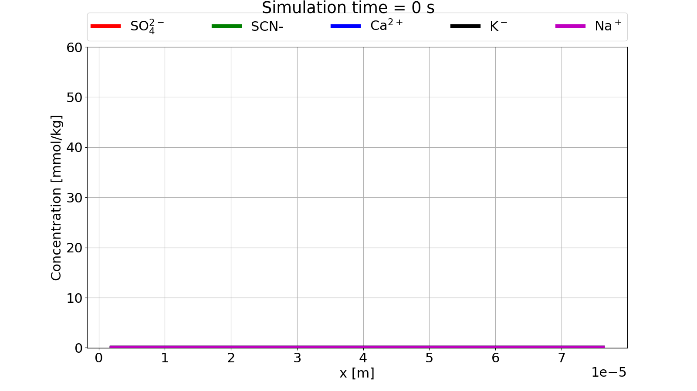
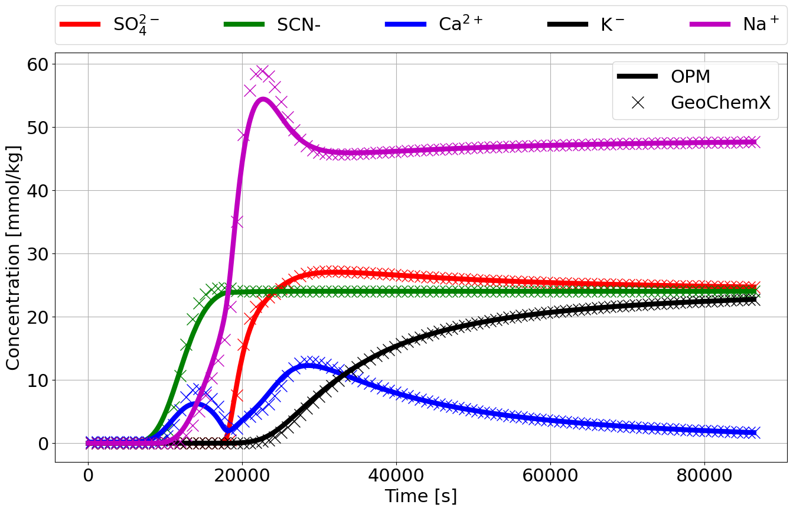
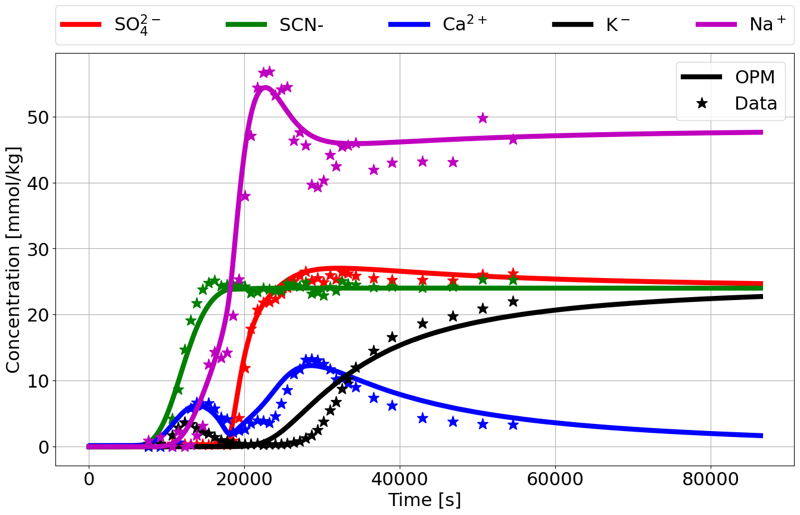

This tutorial is the same as shown for the standalone
GeoChemX program given here: Adsorption
of sulphate and cation exchange in core. Furthermore, OPM Flow deck
keywords are explained in more details in the PHREEQC example 11 and Mineral
reactions tutorials. We will therefore not go into much details on
the setup of the simulations here.
We will focus on the specific keywords for setting up the geochemistry parts of the deck, and refer to the OPM Flow manual for other keywords encountered in the full deck.
Geochemistry is activated using the GEOCHEM keyword:
RUNSPEC
[...]
GEOCHEM
transportII.json 1e-7 1e-8 CHARGE /The first item is a JSON file with information that will be forwarded to the geochemistry solver:
{
"BASIS_SPECIES": [
"SCN- 5 58.08 / HKF 909090 9 /"
],
"COMPLEX" : {
"COMPLEX 0" : {
"METHOD": "1",
"S_AREA": "5000.0 10",
"GCa": "4.95",
"GCO3": "4.95"
}
}
}The BASIS_SPECIES adds a new, user-specified basis
species with database information as explained here,
while the COMPLEX block defines surface complexation as
explained here.
The second and third item in GEOCHEM keyword are
material balance and pH convergence tolerances, while the forth item
forces charge balance in the geochemical equilibrium solver.
The transported species, minerals, and ion exchange are defined with
the SPECIES, MINERAL, and IONEX
keywords in the PROPS section:
PROPS
[...]
SPECIES
H HCO3 CA NA K SCN- SO4 /
MINERAL
CALCITE /
IONEX
X /SCN- is the user-defined species
given in the JSON input file.
The initial conditions for the transported species are given through
<S/M/I>BLK<name> keywords in the
SOLUTION section:
SOLUTION
[...]
SBLKH
20*1.0 /
SBLKHCO3
20*1e-8 /
SBLKCA
20*1e-8 /
SBLKNA
20*0.0 /
SBLKK
20*0.0 /
SBLKSCN-
20*0.0 /
SBLKSO4
20*0.0 /
MBLKCALCITE
20*1.0 /
IBLKX
20*0.09 /The in- and outflow of water (with aqueous species) are handled by
standard well keywords (see OPM Flow manual) and the
WSPECIES keyword:
SCHEDULE
[...]
WSPECIES
INJ NA 4.8e-2 /
INJ K 2.4e-2 /
INJ SCN- 2.4e-2 /
INJ SO4 2.4e-2 /
/The OPM Flow deck is run with the following command:
flow_onephase_geochemistry --enable-opm-rst-file=true --solver-max-time-step-in-days=2e-4 TRANSPORTII.DATA
GeoChemX results:

